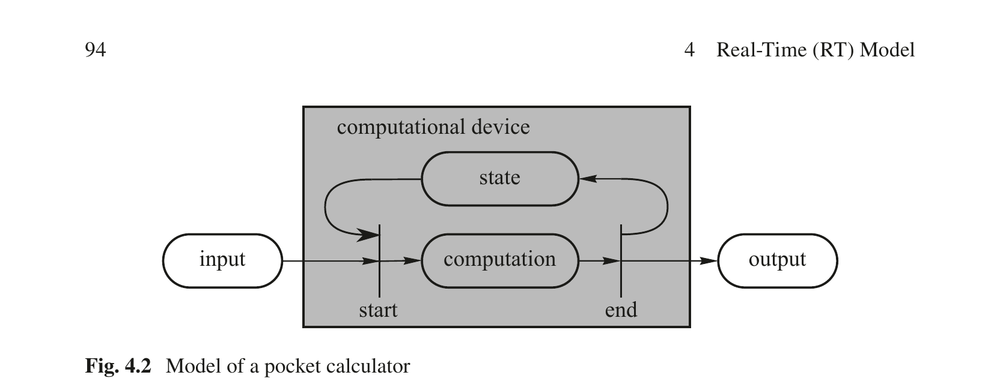

第4章 实时（RT）模型
Real-Time Systems — Hermann Kopetz & Wilfried Steiner 著 | AI 辅助翻译
本章概述
本章的目标是向读者介绍一个跨领域的实时系统行为架构模型。该模型将在本书其余部分中反复使用。该模型基于三个基本概念：计算组件的概念、状态的概念和消息的概念。大型系统可以通过组件——组件间通过消息的交换进行通信——的递归组合来构建。组件可以仅依据其接口规范进行重用，而无需理解组件的内部实现。对可理解性的关注在此模型的开发过程中一直是至高无上的。
本章结构如下。第 4.1 节给出了模型的整体轮廓，描述了组件和消息的基本特征。为实现一个共同目标而协同工作的各个相关组件被分组为集群。解释了时间控制与逻辑控制之间的区别。接下来的第 4.2 节详细阐述了实时时间与组件状态之间的紧密关系。突出强调了一个定义良好的基础状态（ground state）对于组件动态重新加入的重要性。第 4.3 节细化了消息概念，并引入了事件触发消息、时间触发消息和数据流的概念。第 4.4 节呈现了一个组件的四个接口——两个运行接口和两个控制接口。第 4.5 节讨论网关组件（gateway component）的概念，该组件将遵循不同架构风格的两个集群链接起来。第 4.6 节讨论组件链接接口（linking interface）的规范。链接接口是一个组件最重要的接口。它与组件在其集群中的集成相关，包含了使用一个组件所需的所有信息。链接接口规范由三部分组成：(i) 传输规范——包含消息传输的信息，(ii) 运行规范——涉及组件的互操作性和消息变量的建立，以及 (iii) 元层次规范——为消息变量赋予含义。第 4.7 节讨论了在组合一组组件以构建子系统系统或系统之系统时应考虑的要点。本节中介绍了可组合性的四个原则并解释了多层次系统的概念。
4.1 模型轮廓
从外部观察者的视角来看，一个实时系统可以被分解为三个相互通信的子系统：一个受控对象（物理子系统，其行为由物理定律支配）、一个"分布式"计算机子系统（信息子系统，其行为由在数字计算机上执行的程序所支配），以及一个人类用户或操作员。分布式计算机系统由通过交换消息进行交互的计算节点组成。一个计算节点可以容纳一个或多个计算组件。
4.1.1 组件与消息
我们将一个处理单元执行一个算法的过程称为一个计算（computation）。计算由组件（components）执行。在我们的模型中，一个组件是一个自包含的硬件/软件单元，它仅通过与环境的消息交换来与其环境进行交互。我们将一个组件在其与环境的某个接口处产生的、带有时间顺序的输出消息序列，称为该组件在该接口处的行为（behavior）。一个组件意图的行为称为其服务（service）。非意图的行为称为一次失效（failure）。一个组件的内部结构——无论复杂还是简单——对于该组件的使用者而言既不可见，也无需关注。
一个组件由一个设计（design，例如软件）和一个具体执行体（embodiment，例如硬件——包括处理单元、内存和 I/O 接口）组成。一个实时组件包含一个实时时钟，因而知晓实时时间的推进。上电后，组件进入准备启动状态（ready-for-start state），等待表示组件计算执行开始的触发信号。每当触发信号发生时，组件在开始时刻开始执行其预定的计算。然后，它读取输入消息和其内部状态，产生输出消息和更新后的内部状态，如此继续直到它——如果会终止的话——在终止时刻结束计算。随后，它再次进入准备启动状态以等待下一个触发信号。在一个循环系统中，实时时钟在下一个周期开始时产生一个触发信号。
我们模型的一个重要原则是将计算组件与分布式计算机系统中的通信基础设施严格分离。通信基础设施提供在给定的实时时间区间内将单向消息从发送组件传送到一个或多个接收组件（多播）的服务。消息的单向性支持因果链的单向推理结构，并消除了发送方对接收方的任何依赖。这种发送方独立性（sender independence）属性在容错系统设计中至关重要，因为它通过设计避免了错误从一个故障的接收组件反向传播到正确的发送组件。
多播的必要性出于以下原因：
(i) 多播支持由独立的观察者组件对组件间交互进行非侵入式观测，从而使组件的交互在感知上可及，并消除了源自隐藏交互的理解障碍（见第 2.1.3 节关于认知复杂性的讨论）。
(ii) 多播是实现通过主动冗余进行容错的必要条件——在此方案中，每条单独的消息都必须发送到一组复制组件。
一条消息在一个发送时刻（send instant）发送，并在某个稍后的时刻——接收时刻（receive instant）——到达接收方。消息范式将交互的时间控制方面和值方面组合到了一个单一概念之中。一条消息的时间属性包括：发送时刻的信息、时间顺序、消息的到达间隔时间（例如周期性的、零星的、非周期性的重现方式）以及消息传输的延迟。消息可用于同步发送方和接收方。一条消息包含一个数据字段（data field），该字段持有一个从发送方传输到接收方的数据结构。通信基础设施对数据字段的内容不可知。消息概念支持数据原子性（即原子地交付包含在一条消息中的完整数据结构）。一个单独且设计良好的消息传递服务，为组件提供了一个与其他节点内组件以及节点外的环境进行交互的简单接口。它有助于封装、重配置以及组件服务的恢复。
4.1.2 组件集群
一个集群（cluster）是一组为实现一个共同目标而被聚合在一起的相关组件（图 4.1）。除了组件集合之外，一个集群还必须包含一个集群内部通信系统（intra-cluster communication system），为集群组件之间的消息传输提供服务。构成一个计算集群的各组件就一个共同的架构风格（architectural style）达成一致（参见第 2.2.4 节最后几段）。
图 4.1 车内集群示例
（man-machine interface = 人机接口; communication network interface (CNI) within a node = 节点内通信网络接口; driver = 驾驶员; gateway outside = 对外网关; I/O = 输入输出; assistant system = 辅助系统; suspension = 悬挂; brake manager = 制动管理器; engine control = 发动机控制; steering = 转向; gateway to other cars = 到其他车辆的网关）
示例：图 4.1 描绘了一辆汽车内部的一个计算集群的示例。该集群由一个计算组件（辅助系统）以及到人机接口（驾驶员）的网关组件、到汽车物理子系统的网关组件和通过无线车-车通信链路到其他车辆的网关组件组成。
4.1.3 时间控制与逻辑控制
让我们重访第 1.7.3 节图 1.9 中的轧机示例，并指定一个必须由 MMI 组件中报警监控任务监控的被测量变量之间的关系。假设三个驱动器轧辊之间在各控制节点处的压力 p₁、p₂ 和 p₃ 由图 1.9 中的三个控制器组件进行测量。这些测量结果被发送到人机接口（MMI）组件以检查以下报警条件：
when ((p₁ < p₂) ∧ (p₂ < p₃)) then everything ok else raise pressure alarm;
这在用户层面上看起来是一个合理的规约。只要轧辊之间的压力不满足指定条件，就必须发出压力报警。
在系统架构师对这一规约进行细化的过程中，必须设计四个不同的任务（三个控制节点中的三个测量任务以及图 1.9 中 MMI 节点中的一个报警监控任务）。关于这些任务的时间激活，产生了以下问题：
(i) 从受控对象中出现报警条件到 MMI 发出报警之间，允许的最大时间区间是多少？由于组件之间的通信需要有限时间，某些时间区间是不可避免的！
(ii) 三个不同控制节点处三个压力测量之间的最大允许时间区间是多少？如果这些时间区间没有被恰当地控制，将产生虚警或错过重要的报警。
(iii) 我们必须何时以及以何种频率激活三个控制节点处的压力测量任务？
(iv) 我们必须何时激活报警监控组件（即图 1.9 中的 MMI 组件）处的报警监控任务？
由于给定的规约没有回答这些问题，显而易见的是，该规约在时间域中缺乏关于架构需求的精确信息。时间维度被埋没在 when 语句的不恰当规约的语义之中。此例中，when 语句意图服务于两个目的。它在同时规定：
(i) 必须发出报警条件的时间点。
(ii) 必须监控的值域中的条件。
因此，它混杂了两个独立的问题：时间域中的行为和值域中的行为。将这两个问题清晰区分开，需要仔细定义时间控制和逻辑控制的概念。
时间控制（temporal control）涉及确定实时时间域中必须执行计算的时刻——即何时必须激活任务。这些时刻从应用的动态特性中推导得出。在上述示例中，关于压力测量任务和报警监控任务必须在什么时刻激活的决策，就是一个时间控制的问题。时间控制与实时时间的推进相关。
逻辑控制（logical control）涉及任务内部的控制流——该控制流由给定的任务结构和特定的输入数据决定，以完成期望的计算。在上述示例中，分支条件的评估和两个分支中一个分支的选择就是一个逻辑控制的示例。执行逻辑控制的任务所需的执行时间区间由驱动处理单元的振荡器的频率决定——我们将这一时间区间称为执行时间（execution time）。执行时间由给定的实现决定，并且如果我们用更快的处理器替换当前处理器，执行时间将发生变化。
由于时间控制与实时时间相关，而逻辑控制与执行时间相关，在这两种类型的控制之间必须做出仔细的区分。一个好的设计将分离这两个控制问题，以便将对应用所要求的时间约束的推理与对程序算法部分内部逻辑问题的推理相解耦。同步实时语言——如 LUSTRE [Hal92]、ESTEREL [Ber85] 和 SL [Bou96]——清晰地区分逻辑控制和时间控制。在这些语言中，实时时间的推进被划分为一个（无限）序列的具有指定实时时间持续时长的区间——我们称之为步（steps）。
每一步以实时时钟的一个滴答开始，该滴答启动一个计算任务（逻辑控制）。此计算模型假设一个任务一旦被实时时钟的一个滴答（时间控制）激活，就将准立即地完成其计算。实际上，这意味着一个任务必须在下一个触发信号（实时时钟的下一个滴答）启动该任务的下一次执行之前终止其本轮的多次执行。
周期性有限状态机（PFSM）模型 [Kop07] 扩展了经典的 FSM——后者只关注逻辑控制——通过引入一个用于描述全局稀疏时间推进的新维度来覆盖时间控制问题。
如果在某个程序段中将时间控制和逻辑控制的问题混杂在一起，那么在不分析该程序段所处环境行为的情况下，就不可能确定该程序段的最坏情况执行时间（WCET——见第 10.2 节）。这是对设计原则关注点分离（见第 2.5 节）的违背。
示例：一个信号量等待语句是一条时间控制语句。如果一个信号量等待语句被包含在一个也包含逻辑控制（算法性）语句的程序段中，那么该程序段的时间行为将同时依赖于执行时间的推进和实时时间的推进（另见第 9.2 节和第 10.2 节）。
4.1.4 事件触发控制与时间触发控制
在第 4.1.1 节中，我们引入了触发信号（triggering signal）的概念，即指示一个活动在时间域中应当开始的时刻的控制信号。这种触发信号的可能来源是什么？触发信号既可以与一个有意义的事件的发生相关联——我们称之为事件触发控制（event-triggered control），也可以与时间线上一个指定时刻的到达相关联——我们称之为时间触发控制（time-triggered control）。
构成事件触发控制基础的有意义事件可以是：某条特定消息的到达、组件内部一项活动的完成、一个外部中断的发生，或者由应用软件执行了一条发送消息语句。虽然有意义事件的发生通常是零星的，但在两个相继事件之间应当存在一个最短实时时间区间，以避免通信系统和事件接收方过载。我们称这样的、事件之间最短到达间隔被保持的事件流为一个速率受控事件流（rate-controlled event stream）。
时间触发控制信号来源于每个组件中都可用的全局时间的推进。时间触发控制信号通常是循环的。一个周期可通过其周期（period）——即两个相继周期开始之间的实时时间区间——和其相位（phase）——即周期开始（用全局时间表示）与该周期开始之间的区间——来表征（另见第 3.3.4 节）。我们假设每个时间触发活动都与一个周期（cycle）相关联。
4.2 组件状态
引入组件状态（state）这一概念，是为了将实时组件的过去行为与未来行为分离开来。状态的概念要求对过去事件与未来事件做出清晰区分，即有意义的事件之间必须存在一致的时间顺序（参见第 3.3.2 节）。
4.2.1 状态的定义
状态的概念在计算机科学文献中被广泛使用，尽管有时其含义与在实时系统语境中有用的状态含义不同。为澄清这种情况，我们遵循 Mesarovic [Mes89, p. 45] 的精确定义，它构成了我们论述的基础：
"状态使得将来输出的确定能够仅仅基于未来的输入和系统当前所处的状态来进行。换句话说，状态使得过去能够与现在和未来'解耦'。状态体现了系统的全部过去历史。知晓状态'取代了'对过去的了解……。显然，要使这一角色具有意义，过去和未来的概念对于所考虑的系统必须是相关的。"
在第 3.3.2 节中引入的稀疏时间模型，使我们能够在分布式实时计算机系统中建立定义一致系统状态所必需的、系统范围内的过去与未来一致性分离。
4.2.2 口袋计算器的例子
让我们考察口袋计算器这一熟悉的例子，以便更详细地研究状态的概念。一个操作数——即若干键盘数字——必须在按下所选运算符（例如三角函数 sine 的按键）以启动所选函数的计算之前被输入到计算器中。计算终止后，结果显示在计算器显示屏上。如果我们把这次计算视为一个原子操作，并在该原子操作执行之前或之后立即观测系统，那么在这个观测点上，这个简单计算器设备的内状态是空的。
现在，让我们在计算开始与计算结束之间的区间内观察这台口袋计算器（图 4.2）。

图 4.2 口袋计算器模型
（input = 输入; computational device = 计算设备; state = 状态; computation = 计算; output = 输出; start/end = 开始/结束; real-time = 实时）
如果能够观察设备的内部，那么在正弦函数的级数展开过程中，存储在口袋计算器本地内存中的许多中间结果可以被追踪到。如果计算在开始与结束两个时刻之间的某个时刻被中断，那么程序计数器的内容和所有保存中间结果的内存单元构成了该中断时刻的状态。在计算结束时刻之后，这些中间内存单元的内容不再具有相关性，状态再次变为空的。图 4.3 描绘了在一次计算中状态的典型扩展与收缩。
图 4.3 一次计算中状态的扩展与收缩
现在让我们分析一个用于求一组数之和的袖珍计算器的状态。当输入一个新数字时，之前已输入数字的和必须被储存在该设备中。如果在已加完一个数字子集后暂停工作，并改用另一台新计算器继续加法操作，我们首先必须输入先前已加数字的中间结果。在用户层面，该状态就是先前加法操作的中间结果。在操作结束时，我们得到最终结果并清除计算器的内存。状态再次变为空的。
从这个简单示例中，我们可以得出结论：一个系统的状态大小取决于对该系统进行观测的时刻。如果增加观测颗粒度，并且在选定的抽象层次上恰好在原子操作之前或之后选择观测点，那么状态的大小就可以被减小。
在任何中断时刻的状态都包含在程序计数器的内容和所有状态变量的内容中——这些内容必须被加载到一个全新的硬件设备中，才能从该中断时刻起继续该操作。如果一次中断是由一个组件的故障引起的，并且我们必须将该组件重整合到一个运行中的系统，那么必须重加载到已修复组件中的状态的大小就成为了关注的焦点。
如果我们的硬件设备是一台可编程计算机，那么在我们开始一次计算之前，必须首先将软件——即操作系统、一组应用程序以及所有状态变量的初始值——加载到一个全新的硬件设备中。我们将必须加载到一个全新的硬件设备中的软件总称称为核心映像（core image）或作业（job）。通常，作业是一种静态的数据结构，即在软件执行期间不发生变化。在一些嵌入式硬件设备中，作业存储在 ROM（只读存储器）中，因此软件在字面意义上成为了硬件的一部分。
4.2.3 基础状态
为了便于将组件动态重整合到一个运行中的系统，有必要在行为中设计周期性的重整合时刻（reintegration instants），在这些时刻组件在重整合点处的状态包含一小集定义良好的应用特定状态变量。我们将该重整合时刻的状态称为该组件的基础状态（ground state, g-state），而将两个重整合点之间的时间区间称为基础周期（ground cycle）。
重整合点处的基础状态被存储在一个声明的基础状态数据结构中。设计一个最小基础状态数据结构是显式设计努力的结果，涉及对给定应用的语义分析。设计者必须找到这样的周期性时刻，在此时未来行为与过去行为之间存在最大程度的解耦。这在循环应用——如控制应用和多媒体应用——中相对容易实现。在这些应用中，一个自然的重新整合时刻恰在一个周期终止之后和下一个周期开始之前。关于最小化基础状态的设计技术将在第 6.6 节中讨论。
在重整合时刻，没有任何任务可以处于活跃状态，并且所有通信通道必须被清空，即没有任何在途消息 [Ahu90]。考虑一个包含若干并发执行任务的节点，这些任务彼此之间以及与节点环境之间交换消息。让我们选择一个将任务的执行视为原子操作的抽象层次。如果任务的执行是异步的，那么图 4.4 上部所示的情况就可能出现：在每一个时刻，至少有一个任务处于活跃状态，这意味着不存在任何能够定义该节点基础状态的时刻。
在图 4.4 的下部，存在一个没有任何任务活跃且所有通道均为空的时刻——即系统处于基础状态的时刻。如果一个节点处于基础状态，那么对该节点未来运行至关重要的整个状态就包含在该声明的基础状态数据结构中。
图 4.4 任务执行：无基础状态（上）与有基础状态（下）
（task A/B/C = 任务 A/B/C; active = 活跃; ground state = 基础状态; real-time = 实时）
示例：考虑在一个时钟设计中，基础状态的大小与基础（g）周期的持续时间之间的关系。如果基础周期为 24 小时，且新一天的开始为重整合时刻，则基础状态为空。如果每个完整小时都是重整合时刻，则基础状态包含 5 位（用于从一天 24 小时中标识其中一个小时）。如果每个完整分钟都是重整合时刻，则基础状态为 11 位（用于从一天 1440 分钟中标识其中一分钟）。如果每个完整秒都是重整合时刻，则基础状态为 17 位（用于从一天 86400 秒中标识其中一秒）。确定上述哪种方案对于给定应用为最优，取决于该应用的特征。如果该时钟是一个能够存储最多四个闹钟且闹钟精度为 5 分钟的闹钟，那么每个闹钟的基础状态为 10 位（9 位用于闹钟时间，1 位用于表示闹钟是开启还是关闭）。如果我们假定重整合周期为 1 秒并支持四个闹钟，那么在此简单示例中，基础状态消息的长度为 57 位。此基础状态可以存储在一个 8 字节的数据结构中。在重启动消息中，时间字段必须被修正，使其包含重启动时刻的精确时间值。
表 4.1 基础状态恢复与检查点恢复的比较
| 基础状态恢复 | 检查点恢复 | |
|---|---|---|
| 数据选择 | 应用特定的、对该系统未来运行至关重要的小数据集合 | 自计算开始以来所有被修改过的数据元素 |
| 数据修改 | 基础状态数据被修改以在未来重整合时刻建立基础状态与环境状态之间的一致性。在实时系统中无法对环境进行回滚 | 检查点数据不作修改。一致性通过将（数据）环境回滚到检查点数据被捕获的时刻来建立 |
表 4.1 展示了基础状态恢复与检查点恢复本质上不同的——检查点恢复用于在非实时数据密集型系统发生失效后建立一致状态。
4.2.4 数据库组件
我们将动态数据元素——即由计算所修改的数据元素——的数量过大以至于无法将它们存储于单条基础状态消息中的组件称为数据库组件（database component）。包含在数据库组件中的动态数据元素可以是状态数据的一部分，也可以是归档数据（archival data）。
术语归档数据指的是出于归档目的而收集的数据，它不会直接影响组件未来的行为。归档数据是用于记录生产过程变量历史的需要，以便能在将来的某个时间离线分析生产过程。将归档数据尽快发送到一个远程的归档存储位置是一种良好的实践。云计算和云存储正越来越多地用于此目的（见第 14 章）。
示例：飞机上的传奇黑匣子包含归档数据。人们可以在数据收集之后立即通过卫星链路将其发送到地面的一个存储站点，以避免在事故发生后必须从残骸中打捞黑匣子的麻烦。
4.3 消息概念
消息（message）的概念是我们模型的第三个基本概念。一条消息是一个原子性的数据结构，它为通信之目的——即组件之间的数据传输和同步——而构成。
4.3.1 消息结构
消息的概念与邮政系统中信件（letter）的概念相似。一条消息由一个头部（header）、一个数据字段（data field）和一个尾部（trailer）组成。头部——对应于信件的信封——包含接收方的端口地址（即消息必须送达的邮箱）、关于消息应当如何处理的信息（例如挂号信），并且可以包含发送方的地址。数据字段包含消息的应用特定数据，对应于信件的内容。尾部——对应于信件中的签章——包含允许接收方检测消息中包含的数据是否未损坏且真实的信息。尾部有不同类型：最常见的尾部是一个 CRC 字段，允许接收方确定数据字段在传输过程中是否已被损坏。一条消息也可以在尾部包含一个电子签名，使得能够确定被认证的消息内容是否未被更改（见第 6.2 节）。原子性的概念意味着一条消息要么被完全交付，要么根本不交付。如果一条消息被损坏或消息的仅部分到达接收方站点，则整条消息都将被丢弃。所述尾部的目的正在于以足够高的概率来确保原子性。
消息概念的时间维度与消息被发送方发送和被接收方接收的时刻相关，因此也与消息处于在途状态的时间长度相关。我们将发送时刻与接收时刻之间的区间称为传输延迟（transport delay）。时间维度的第二个方面与发送方产生消息的速率和接收方消费消息的速率有关。如果发送速率受到约束，那么我们称之为速率受控消息系统（rate-constrained message system）。在发送方速率不受约束的情况下，发送方可能使通信系统的传输能力过载（我们称之为拥塞，congestion），或者使接收方的处理能力过载。如果接收方跟不上发送方的消息产生速率，接收方可以向发送方发送一条控制消息告知发送方放慢速度（背压流控制，back pressure flow control）。替代地，接收方或通信系统可以简单地丢弃超过其处理能力的消息。
4.3.2 事件信息与状态信息
一个动态系统的状态随着实时时间的推进而变化。让我们假定我们周期性地观测一个系统的状态变量，两次相继观测之间的持续时长为 d。如果我们观测到所有状态变量的值在两次相继观测中相同，那么我们就推断在过去的观测区间 d 内没有事件——即状态变化——发生。这一结论只有在系统动态相对于我们的观测区间 d 而言较为缓慢时才有效（参见 Shannon 定理 [Jer77]）。如果某些状态变量值的两次相继观测不同，那么我们推断在过去的观测区间 d 内至少发生了一个事件。我们可以通过两种不同的方式报告一个事件——即状态变化——的发生：要么发送一条包含事件信息（event information）的单条消息，要么发送一系列包含状态信息（state information）的消息。
当信息传达了之前状态观测与当前状态观测中的值差异时，我们称之为事件信息。当前（较晚）观测的时刻被假定为事件发生的时刻。这一假设并非完全精确，因为该事件可能发生在过去持续时间 d 的区间内的任何时刻。我们可以通过使区间 d 更小来减小事件的这一时间观测误差，但我们不能完全消除观测事件时的时间不确定性。即使我们使用处理器的中断系统来报告事件，这一点也仍然为真——中继中断发生情况的输入信号并不被处理器连续感知，而仅仅在一条指令执行终止后才被感知。这一延迟的引入是为了减少处理器中必须保存和恢复的处理器状态量，以便在中断被服务后能够继续被中断的任务。如第 4.2.3 节所论述的，在原子操作的执行之前或之后——此例中即为处理器执行一条完整指令之前或之后——状态是最小的。
如果事件的精确计时是关键的，我们可以提供一个专门的、独立的硬件设备来立即对观察到的、中断线的状态变化打上时间戳，从而将时间观测误差减小到与硬件的周期时间处于同一数量级的值。这类硬件设备被用于在分布式系统中实现精确的时钟同步——其中分布式时钟系统的精度须达到纳秒量级。
示例：IEEE 1588 时钟同步标准建议实现一个独立的硬件设备来精确捕获时钟同步消息的到达时刻。
当信息传达了当前状态变量的值时，我们称之为状态信息。如果一条消息的数据字段包含状态信息，那么由接收方负责比较两次相继的状态观测并确定是否发生了一个事件。关于事件发生的时间不确定性与上述相同。
4.3.3 事件触发（ET）消息
如果发送一条消息的触发信号来源于一个有意义的事件的发生——例如应用软件执行了一条发送消息命令——则称该消息为事件触发（ET）消息。
ET 消息非常适合传输事件信息。由于一个事件指向一个唯一的状态变化，接收方必须消费每一条事件消息，并且不允许复制一条事件消息。我们说一条事件消息必须遵守精确一次（exactly once）语义。事件消息模型是大多数非实时系统中遵循的标准消息传输模型。
示例：事件消息"阀门必须关闭 5 度"意味着阀门新的意图位置等于当前位置加 5 度。如果该事件消息丢失或重复，则计算机中阀门位置状态的镜像将与环境中的阀门位置实际状态相差 5 度。该错误可以通过状态对齐（state alignment）来纠正，即将意图阀门位置的（完整）状态发送给该阀门。
在事件触发系统中，错误检测是发送方的责任，发送方必须从接收方收到一条显式的确认消息，告知发送方该消息已正确到达。接收方无法执行错误检测，因为接收方无法区分"发送方无活动"与"消息丢失"。因此，控制流必须为双向控制流，即便数据流仅是单向的。发送方必须是时间感知的，因为它必须在一个有限的实时时间区间内决定通信是否已经失败。这正是我们无法构建不对实时时间推进加以感知的容错系统的原因之一。
4.3.4 时间触发（TT）消息
如果发送一条消息的触发信号来源于实时时间的推进，则称该消息为时间触发（TT）消息。在系统开始运行之前，每个时间触发消息都已被分配了一个由其周期和相位表征的周期。在周期开始的时刻，该消息的传输由操作系统自动启动。在 TT 消息传输中，不需要发送消息命令。
TT 消息非常适合传输状态信息。一条包含状态信息的 TT 消息称为一条状态消息（state message）。由于一个新的状态观测版本通常会取代已有的旧版本，一条新状态消息原地更新旧消息是合理的。在读取时，状态消息并不被消费；它保留在内存中，直到被一个新版本更新。状态消息的语义类似于程序变量的语义，可以多次读取而不被消费。由于在状态消息传输中不需要队列，队列溢出便不成问题。
基于状态消息的先验已知周期，接收方可以自主执行错误检测来发现状态消息的丢失。状态消息支持独立原则（参见第 2.5 节），因为发送方和接收方可以以不同的（独立的）速率运行，并且接收方没有任何影响发送方的手段。
示例：一个温度传感器每秒观测一次环境中的温度传感器的状态。一条状态消息非常适合将该观测结果传输到一个用户，并将其存储在名为 temperature 的程序变量中。用户程序可以在需要参考当前环境温度时随时读取此变量 temperature，并且知道存储在该变量中的值在大约 2 秒内是最新的。如果一条单独的状态消息丢失，那么在一个周期内存储于该变量中的值仅在大约 3 秒内是最新的。因为在一个时间触发系统中，通信系统事先就知道何时必须到达一条新的状态消息，它可以为该变量 temperature 关联一个标志位，以告知用户该变量 temperature 在上一个周期内是否被正确更新。
4.4 组件接口
让我们假设一个大型基于组件的系统设计被划分为两个不同的设计阶段：架构设计（architecture design）和组件设计（component design）（另见第 11.2 节关于系统设计的讨论）。在架构设计阶段结束时，可以获得该系统的平台独立模型（PIM，Platform-Independent Model）。PIM 是一个可执行模型，将系统划分为集群和组件，并包含各组件的链接接口在值域和时间域中的精确接口规范。PIM 的链接接口规范与组件实现无关，并且可以用一种高层可执行系统语言——例如 System C——来表达。一个 PIM 组件被转化为一种可以在最终执行平台上运行的形式后，称为该组件的平台特定模型（PSM，Platform-Specific Model）。PSM 具有与 PIM 相同的接口特征。在许多情况下，一个恰当的编译器可以将 PIM 自动转化为 PSM。
一个接口应当服务于一个单一且定义明确的目的（关注点分离原则；见第 2.5 节）。基于目的，我们区分一个组件的以下四个消息接口（图 4.5）：
图 4.5 组件的四个接口
（TDI—Technology dependent interface for looking inside a component (e.g., for internal diagnosis) = TDI—用于查看组件内部的、技术相关接口（例如用于内部诊断）; LIF—linking interface for the composition of components = LIF—用于组件组合的链接接口; TII—technology independent interface for component configuration and resource management = TII—用于组件配置和资源管理的技术无关接口; local interfaces (e.g., process input/output) = 本地接口（例如过程输入/输出））
- 链接接口（LIF）：LIF 在被考虑的抽象层次上提供了该组件的指定服务。此接口与组件实现无关。PIM 和 PSM 的 LIF 是相同的。
- 技术无关接口（TII）：TII 用于配置和控制组件的执行。此接口与组件实现无关。PIM 和 PSM 的 TII 是相同的。
- 技术相关接口（TDI）：TDI 用于为维护和调试目的提供对组件内部的访问。此接口是特定于具体实现的。
- 本地接口：本地接口将一个组件与外部世界连接起来，即一个集群的外部环境。此接口在语法上仅在 PSM 层面被指定，尽管此接口的语义内容包含在 LIF 之中。
LIF 和本地接口是运行接口（operational interfaces），而 TII 和 TDI 是控制接口（control interfaces）。控制接口用于控制、监控或调试一个组件，而运行接口在组件正常运行期间使用。在我们详细讨论这四个接口之前，先阐述消息接口的一些一般属性。
4.4.1 接口特性
推式接口与拉式接口：在接收组件的接口处，处理一条新消息到达有两种选择方案：
- 信息推送（information push）：通信系统引发一个中断，强制组件立即对消息做出反应。对组件时间行为的控制被委托给了组件外部的环境。
- 信息拉取（information pull）：通信系统将消息放置在一个中间存储位置。组件周期性地检查是否有新消息到达。时间控制保持在组件内部。
在实时系统中，应在可能的情况下遵循信息拉取策略。只有在需要立即动作、且由信息拉取策略引入的一个周期延迟不可接受的情况下，才应当采取信息推送策略。在后种情况下，必须建立机制以保护组件免受因组件外部故障而引起的错误中断的影响（另见第 9.5.3 节）。信息推送策略违背了独立原则（见第 2.5 节）。
示例：一个汽车发动机控制组件在未与防盗系统集成之前工作正常。该发动机控制器与防盗系统之间的消息接口被设计为推式接口，导致当防盗系统传来消息时，一个时间关键的发动机控制任务会在不恰当的时刻被零星的、中断性的打断。结果是，该发动机控制器零星地错过截止时间并失效。将接口改为拉式接口解决了此问题。
基本接口与复合接口 在一个分布式实时系统中，有许多情况只需要在一个发送组件与一个接收组件之间实现一个简单的单向数据流。如果数据流和控制流都是单向的，我们称这样的接口为基本接口（elementary interface）。如果在单向数据流场景中控制流是双向的，我们称该接口为复合接口（composite interface）（图 4.6）[Kop99]。
图 4.6 基本接口与复合接口
（elementary interface = 基本接口; example: state message data in a DPRAM = 示例：DPRAM 中的状态消息数据; composite interface = 复合接口; example: queue of event data = 示例：事件数据队列; control = 控制流; data = 数据流; A/B = 组件 A/B）
基本接口在本质上比复合接口更简单，因为发送方的行为不依赖于接收方的行为。我们可以推理发送方的正确性，而无须考虑接收方的行为。这在安全关键系统中尤为重要。
4.4.2 链接接口（LIF）
一个组件的服务在其集群 LIF 上可被访问。组件的集群 LIF 是一个基于消息的运行接口，它将一个组件与集群中的其他组件互连起来，因此是组件集成到集群中的接口。一个组件的 LIF 将该组件的内部结构和本地接口加以抽象。LIF 的规范必须是自包含的，不仅涵盖组件本身的功能和时序，还涵盖其本地接口的语义。LIF 是与技术无关的，这意味着 LIF 不暴露组件内部或其本地接口的实现细节。一个技术无关的 LIF 确保了相同的计算组件实现（例如通用 CPU、FPGA、ASIC）和不同的本地输入/输出子系统可以连接到同一个组件，而无需对通过其基于消息的 LIF 与该组件交互的其他组件做任何修改。
示例：在一个输入/输出组件中，外部输入和输出信号通过本地点对点布线接口连接。引入一个总线系统——例如 CAN 总线——将不会改变该输入/输出组件的集群 LIF，只要出现在 LIF 上的数据的时间属性保持相同。
4.4.3 技术无关接口（TII）
技术无关接口是一个控制接口，用于：配置一个组件——例如为一个组件及其输入/输出端口分配合适的名称；重置、启动和重启动一个组件；以及在运行时监控和控制组件的资源需求（如功耗），如果需要的话。此外，TII 还用于配置和重配置一个组件，即为可编程组件硬件分配一个特定的作业（即核心映像）。
到达 TII 的消息要么直接与组件硬件通信（例如重置），要么与组件的操作系统（例如启动某任务）或组件中间件通信，而不与应用软件通信。因此，TII 与 LIF 是正交的。这种将应用特定的消息接口（LIF）与组件的系统控制接口（TII）严格分离的做法，简化了应用软件并降低了组件的整体复杂性（另见第 2.5 节中的关注点分离原则）。
4.4.4 技术相关接口（TDI）
TDI 是一个特殊的控制接口，提供了查看组件内部和观察组件内部变量的手段。它与边界扫描接口相关——后者广泛应用于大型 VLSI 芯片的测试和调试，并已在 IEEE 1149.1 标准（也称 JTAG 标准）中标准化。TDI 面向的是对组件内部有深入理解的人员。TDI 与组件 LIF 服务的使用者或配置组件的系统工程师均无关。TDI 的精确规范取决于组件实现技术，且当同一个组件功能以软件运行在 CPU 上、以 FPGA 或以 ASIC 的方式实现时将各不相同。
4.4.5 本地接口
本地接口在组件与其外部环境之间建立连接，例如与物理装置中的传感器和执行器、人类操作员或另一个计算机系统之间的连接。一个包含本地接口的组件称为网关组件（gateway component）或开放组件（open component），与不包含本地接口的封闭组件（closed component）相对。
从组件 LIF 语义规约的角度看，开放组件与封闭组件之间的区分是重要的。只有封闭组件可以在不知道其使用语境的情况下被完全规约。
从集群 LIF 的角度看，只有时间属性和语义内容——即跨越本地接口交换的信息的含义——才具有相关性，而本地接口的详细结构、命名和访问机制在集群层面则被有意留作未指定。本地访问机制的修改——例如用 Ethernet 替换 CAN 总线——不会对 LIF 规范、因而也不会对 LIF 规范的使用者产生任何影响，只要相关数据项的语义内容和时间属性保持不变（另见第 2.5 节中的抽象原则）。
示例：一个计算三角函数的组件是一个封闭组件。其功能可以被形式化规约。一个读取温度传感器的组件是一个开放组件。温度的含义是应用特定的，因为它取决于传感器被放置在物理装置中的位置。
4.5 网关组件
从一个集群的视角看，网关组件是一个连接两个世界的开放组件：集群的内部世界和集群环境的外部世界。网关组件充当这两个世界之间的中介。它拥有两个运行接口：到集群的 LIF 消息接口和到外部世界的本地接口——后者可以是物理装置、人机接口或另一个计算机系统（图 4.7）。从集群外部来看，接口的角色颠倒过来——先前的本地接口成为新的 LIF，先前的 LIF 成为新的本地接口。
图 4.7 LIF 与本地外部世界接口之间的网关组件
（controlled object = 受控对象; operator = 操作员; another computer = 另一计算机; cluster = 集群; LIF = LIF 消息接口; local interface = 本地接口; gateway component = 网关组件; cluster communication system = 集群通信系统; (outer world) = （外部世界））
4.5.1 属性不匹配
每个系统都是按照一种架构风格（architectural style）开发的——即一组被采纳的规则和约定，涉及概念形成、数据表示、命名、编程、组件的交互、数据语义等诸多方面。架构风格表征了那些代表设计结果的实体的属性。架构风格的细节有时被明确记录，但更多时候仅被开发团队隐含性地遵循，反映了支配该开发共同体的不成文约定（另见第 2.2.4 节最后几段）。
每当一个通信通道连接两个由不同组织开发的系统时，跨越该通道交换的消息中的某些属性极有可能存在不一致。我们将在该消息的发送方与接收方之间任何数据或协议属性的不一致称为属性不匹配（property mismatch）。解决属性不匹配正是网关组件的任务。
示例：假设一条消息的发送方与接收方之间存在端序（endianness）——即数据的字节顺序——上的差异。如果发送方假定大端序（big endian）——最高有效字节在前，而接收方假定小端序（little endian）——最低有效字节在前，那么这种属性不匹配必须由发送方、接收方或一个中间连接器系统——即网关组件——来解决。
属性不匹配发生在系统交互的边界处，而非在一个设计良好的系统内部。在一个系统内部，所有伙伴都遵守该架构风格的规则和约束，属性不匹配通常不是问题。属性不匹配应当在连接两个系统的网关组件中解决，以保持各个交互子系统内部架构风格的完整性。
4.5.2 网关组件的 LIF 与本地接口
如前所述，构成一个集群的一组相关组件在其集群 LIF 上共享一个共同的架构风格。这意味着集群 LIF 消息之间的属性不匹配是罕见的。
这与跨越一个网关组件的消息形成了对比。这些消息来自两个不同的世界，这两个世界由两种不同的架构风格所表征。这两组消息之间的属性不匹配、语法不兼容、命名不连贯和表示上的差异是常态而非例外。网关组件的主要任务就是将其中一个世界的架构风格翻译为另一个世界的架构风格，而不改变消息变量的语义内容。
存在这样的情况，即两个接口世界的架构风格基于对现实的不同概念化——也就是说，
不仅仅是在相同概念的名称和表示上存在差异（如第 2.2.4 节中的示例所示），而是概念本身——即语义内容——都是不同的。
从一个给定集群的视角来看，网关组件将外部世界（即本地接口）的细节从计算集群内部的标准化消息格式中隐藏起来，并过滤传入的信息：只有与所考虑集群的运行相关的信息才以集群标准消息的形式暴露在该网关组件的集群 LIF 处。
一个重要的外部世界接口的特例是过程 I/O 接口，它在信息世界与物理世界之间建立链接。表 4.2 描绘了 LIF 消息与到物理工厂的过程控制 I/O 接口之间的一些差异。
表 4.2 LIF 与本地过程 I/O 接口的特征
| 特征 | 本地过程 I/O 接口 | LIF 消息接口 |
|---|---|---|
| 信息表示 | 由给定的物理接口设备决定，独一无二的 | 在整个集群内统一 |
| 编码 | 模拟或数字，独一无二的 | 数字，统一编码 |
| 时间基准 | 稠密的 | 稀疏的 |
| 互联模式 | 一对一 | 一对多 |
| 耦合 | 紧密，由具体的硬件需求和所连接设备的 I/O 协议决定 | 较松散，由 LIF 消息通信协议决定 |
示例：在一个过程工厂的外部世界中，过程变量温度的值可能以模拟的 4–20 mA 传感器信号编码，其中 4 mA 表示所选测量范围（如 0°C 至 100°C）的 0%，20 mA 表示 100%。该模拟表示必须转换为该给定集群架构风格中定义的标准温度表示——可能是开氏温度。
示例：让我们考察一个重要的接口——人机接口（MMI）——以区分网关 MMI 组件的本地接口和 LIF 消息接口（图 4.8）。在架构建模层面，我们并不关心本地外部世界接口的表示细节，而只关心 LIF 消息接口处消息变量的语义内容和时间属性。一条重要消息被发送到 MMI 组件。它以某种方式被中继到操作员的心智。在给定的时间区间内，LIF 消息接口处期望收到操作员的一条响应消息。所有涉及操作员终端图形用户界面（GUI）上信息表示的错综复杂问题，从操作员与集群之间交互模式的架构建模角度看都是无关的。如果我们模型的目的在于研究具体人机交互中的人因问题，那么信息在 GUI 上的表现形式和属性（如符号的形状和放置、颜色和声音）就将具有相关性，不能被忽略。
图 4.8 标准化 LIF 与具体 MMI
（important incoming message = 重要传入消息; reaction message = 反应消息; man-machine interface (view, sound) = 人机接口（视图、声音）; input message = 输入消息; cluster LIF standardized messages = 集群 LIF 标准化消息）
一个网关组件可以连接两个不同的集群，它们由两个使用两种不同架构风格的不同组织设计。该网关组件的两个接口中，哪个被视为 LIF，哪个被视为本地接口，取决于所持的视角。如先前已提到的，如果我们改变视角，则 LIF 变为本地接口，本地接口变为 LIF。
4.5.3 标准化消息接口
为改善由不同制造商设计的组件之间的兼容性、增强设备的互操作性并避免属性不匹配，一些国际标准组织已试图将消息接口标准化。这种标准化努力的一个例子是 SAE J1587 消息规约。汽车工程师学会（SAE）在 J1587 标准中对重型车辆应用的消息格式进行了标准化。该标准定义了重型车辆应用领域中出现的许多数据元素的消息名称和参数名称。除数据格式外，变量的范围和更新频率也涵盖在该标准中。
4.6 链接接口规范
如第 4.1.1 节所述，一个组件跨越其与环境的接口交换的、带有时间顺序的消息序列定义了该组件在该接口处的行为 [Kop03]。因此，接口行为由跨越一个接口的所有消息的属性决定。我们将一个接口规范分为三个部分：(i) 消息的传输规范，(ii) 消息的运行规范，以及 (iii) 消息的元层次规范。
传输规范描述了为将一条消息从发送方传输到接收方所需的所有消息属性。传输规范涵盖了一条消息的编址和时间属性。如果两个组件由一个通信系统连接，传输规范就足以描述从该通信系统请求的服务。通信系统对消息数据字段的内容是不可知的。对通信系统而言，数据字段包含的是多媒体数据（如语音或视频）、数值数据还是任何其他数据类型并无区别。
示例：互联网在两个端系统之间提供一种定义好的消息传输服务，而并不知晓正在传输何种类型的数字数据。
为了能在通信端点处解释一条消息的数据字段，我们还需要运行规范和元层次规范。运行规范提供了关于跨越 LIF 交换的消息的语法结构信息，并建立了消息变量。传输规范和运行规范都必须是精确且形式化的，以确保组件的语法互操作性。一个 LIF 的元层次规范为运行规范中引入的消息变量名称赋予含义。它基于用户环境的接口模型。由于不可能形式化真实世界用户环境的各个方面，元层次规范通常会包含自然语言要素，而自然语言缺乏形式系统的精确性。应用领域和应用的中央概念可以使用领域特定的本体论来规约。
4.6.1 传输规范
传输规范包含通信系统为将一条消息从发送方传输到接收方所需的信息。一个接口包含多个端口（ports），这些端口是消息到达该接口或放置待发送消息的位置。传输规范必须包含以下属性：
- 端口地址与方向。
- 消息数据字段的长度。
- 消息类型（例如时间触发、事件触发或数据流）。
- 时间触发消息的周期。
- 事件触发消息或数据流的队列深度。
这些属性是与消息本身相关联，还是与消息被处理的端口相关联，是一个设计决策。
如前所述，传输规范必须包含关于消息时间属性的信息。对于时间触发消息，时间域由与每个时间触发消息相关联的周期来精确指定。对于事件触发消息，时间规约更加困难——特别是当事件触发消息可以以突发方式到达时。从长期来看，消息到达率必须不大于接收方的消息消费率，因为事件触发消息必须遵守精确一次语义（见第 4.3.3 节）。在短其内，到达的消息突发可以被缓冲在接收方队列中，直至队列满。为突发性事件触发消息指定恰当的队列长度非常重要。
4.6.2 运行规范
从通信的角度看，一条到达消息的数据字段可视为一个无结构的位向量。在通信的端点处，运行规范决定了如何将此位向量构成为消息变量（message variables）。一个消息变量是一个语法单元，由一个固定部分和一个可变部分组成（见第 2.2.4 节）。关于如何将一条消息的数据字段构成语法单元的信息包含在一个消息结构声明（MSD，Message-Structure Declaration）中。MSD 包含消息变量名称（即消息变量的固定部分）——这些名称在一侧指向相关的概念——并在另一侧指定了无结构位向量的哪一部分表示一个消息变量的值（即可变部分）。除结构信息外，MSD 还可以包含用于检查传入数据有效性的输入断言（input assertions）——例如测试数据是否处于接收组件能够处理的允许数据域内——以及用于检查传出数据的输出断言（output assertions）。一个通过输入断言的传入数据元素称为允许数据元素（permitted data element）。一个通过输出断言的传出数据元素称为已检查数据元素（checked data element）。用于在 MSD 中指定数据结构和断言的形式体系取决于可用的编程环境。
在许多实时系统中，MSD 是静态的，即在系统的整个生命期内不变化。在这些系统中，出于性能的原因，MSD 并不在消息中传输，而是存储在必须处理数据字段的通信伙伴的内存中。
到达一个端口的无结构位向量与关联的 MSD 之间的链接可以通过不同方式建立：
- MSD 名称被赋予输入端口名称。在这种情况下，只有一个单一消息类型可以被该端口接受。
- MSD 名称包含在消息的数据字段中。在这种情况下，不同的消息类型可以在同一端口被接收。此方法在 CAN（见第 7.3.1 节）中采用。
- MSD 名称被赋予一条时间触发消息的循环到达时刻。在这种情况下，不同的消息类型可以在同一端口被接收，而无需将 MSD 名称存储在消息的数据字段中。此方法在 TTP（见第 7.5.1 节）中采用。
- MSD 名称存储在一个可以被消息接收方访问的服务器中。此方法在 CORBA [Sie00] 中采用。
- MSD 本身就是消息的一部分。这是最灵活的方案，代价是必须在每条消息中发送完整的 MSD。此方法在面向服务架构（SOA）[Ray10] 中采用。
4.6.3 元层次规范
LIF 元层次规范为在运行层面两个通信 LIF 之间交换的消息变量赋予含义，由此建立语义互操作性。它弥合了语法单元与用户关于接口所提供服务的心理模型之间的鸿沟。在此元层次规范中居于中心地位的是LIF 服务模型（LIF service model）。LIF 服务模型定义了与运行规范中包含的消息变量名称相关联的概念。这些概念对于封闭组件和开放组件而言在性质上不同（见第 4.4.5 节）。
封闭组件的 LIF 服务模型可以是形式化的，因为封闭组件不与外部环境交互。LIF 输入与 LIF 输出之间的关系取决于该封闭组件内部实现的离散算法。不存在来自外部环境的、可以为组件行为带来不可预测性的输入。集群内部的稀疏时间基准是离散的，并支持所有事件的一致时间顺序。
开放组件的 LIF 服务模型则有着根本的不同，因为在其接口规范中必须包含来自外部环境的输入——也就是组件的本地接口。在不知道开放组件使用语境的情况下，只能提供开放组件的运行规范。由于外部物理环境无法被严格定义，对外部输入的解释取决于对自然环境中的人类理解。因此，在描述 LIF 服务模型时所使用的概念必须与使用者内部概念图景（见第 2.2 节）中的习惯概念高度契合；否则该描述将不被理解。
接下来的讨论聚焦于开放组件的 LIFs，因为我们所关注的系统必须与外部环境交互。开放组件 LIF 服务模型必须满足以下需求：
- 用户导向：典型用户所熟悉的概念必须是 LIF 服务模型的基本元素。例如，如果预期用户具有工程背景，那么在呈现该模型时，应当使用该工程学科中的常识性术语和记号。
- 目标导向：组件的用户使用该组件的意图是达成一个目标——即对她/他问题的解决做出贡献。用户意图与 LIF 所提供的服务之间的关系必须在 LIF 服务模型中予以揭示。
- 系统视图：一个 LIF 服务的用户（即系统架构师）需要考察组件与外部物理环境交互的系统级效应——即超出该组件范围之外的效应。LIF 服务模型与描述组件内部实现的算法的模型是不同的，因为这些算法处于组件的边界之内。
示例：让我们分析一个包含温度的变量的简单情形。与任何变量一样，它由两部分组成：静态的变量名和动态的变量值。MSD 包含静态变量名（我们假定该变量名为 Temperature-11）以及动态变量值在消息到达的位流中所放置的位置。元层次规范解释了 Temperature-11 的含义（另见第 2.2.4 节中的示例）。
4.7 组件集成
一个组件是一个自包含的、已验证的单元，可以用作构建更大系统的积木。为了使一个组件能够直接被组合到一个组件集群中，应当遵守以下四条可组合性原则。
4.7.1 可组合性原则
(i) 组件的独立开发：架构必须支持在值域和时间域中对一个组件的链接接口（LIF）进行精确规约。这是一侧独立开发组件、另一侧仅依据 LIF 规范重用已有组件的必要前提。虽然交互消息的值域的运行规约在嵌入式系统设计中已是先进水平，但这些消息的时间属性却往往定义不清。许多现有架构和规约技术并未以适当的审慎来处理时间域。注意，传输规范和运行 LIF 规范与开放组件的使用语境无关，而开放组件的元层次 LIF 规范依赖于使用语境。因此，开放组件的互操作性并不等同于开放组件的交互工作性（interworking），因为后者还假定元层次规范的兼容性。
(ii) 先行服务的稳定性：先行服务的稳定性原则指出：一个组件在隔离环境中已验证的服务（即在组件被集成到更大系统之前）在集成之后保持不变（见第 4.4.1 节的示例）。
(iii) 无干扰的交互：如果存在两组不相交的、共享一个共同通信基础设施的协作组件子组，则一个子组内的通信活动不得干扰另一个子组内的通信活动。如果该原则未被满足，则一个组件子组内的集成将依赖于其他（功能上不相关的）组件子组的正确行为。这些全局性干扰破坏了架构的可组合性。
示例：在一个所有组件以先到先服务方式共享单一通信通道的通信系统中，关键瞬间（critical instant）被定义为所有发送方同时开始发送消息的那个瞬间。假设在这样一个系统中，需将十个组件集成到一个集群中。一个给定的通信系统能够在八个组件活跃的情况下处理该关键瞬间。一旦第九和第十个组件被集成进来，就出现了零星的时序失效。
(iv) 在故障情况下对组件抽象的保持：在一个可组合架构中，所引入的组件抽象应当保持完整——即使某个组件变得有故障。必须能够在无需知道组件内部细节的情况下，诊断并替换一个有故障的组件。这要求在架构内部具有某种程度的错误检测冗余。该原则约束了组件的实现，因为它限制了组件之间默示性的资源共享。如果一个共享资源发生故障，则可能影响多于一个组件。
示例：为了检测一个有故障的组件——其行为类似"喋喋不休的白痴"——通信系统必须包含关于每个组件允许的时间行为的信息。如果一个组件在时间域中发生故障，通信系统就将该违反其时间规约的组件切断，从而在其余正确组件间维持及时的通信服务。
4.7.2 集成视点
为了将可理解的结构引入大型系统，将——从集成视点看到的——一个（原始）组件集群视为一个单独的网关组件是有意义的。该集成视点建立了一个新的集群，该集群由原始集群各自的网关组件组成。从原始集群的角度看，该网关的外部（本地）接口成为了新集群的 LIF，而从新集群的角度看，该网关到原始集群的 LIF 是新集群的本地接口（见第 4.5.2 节）。到新集群的各个网关仅将那些与新集群的运行相关的信息项提供给新集群。
示例：图 4.1 描绘了一个构成汽车内部控制系统的组件集群。车-车网关组件（图 4.1 中右下组件）建立了到其他车辆的一条无线链路。在此示例中，我们区分了以下两个集成层次：(i) 将组件集成到图 4.1 所示的集群中，以及 (ii) 将一辆车集成到一个由汽车组成的动态系统中——这通过车-车（C2C）网关组件实现。如果我们考察图 4.1 集群内部的组件集成，那么 C2C 网关组件的通信网络接口（CNI）就是集群 LIF。从 C2C 通信的角度看，该集群 LIF 是 C2C 网关组件的（未指定的）本地接口（另见第 4.5.2 节最后一段）。
导致不同集成层次的组件和集群的层级组合是组件集成的一个重要特例。多层次性（Multilevelness）是大型系统中的一个重要组织原则。在最低集成层次上，原始组件（即被认为是原子单元、不再进一步分解的组件）被集成以构成一个集群。该集群中的一个特定组件是一个网关组件，它与其他集群的特定网关组件一起构成一个更高层次的集群。这一集成过程可以递归地继续下去，以构建一个具有不同集成层次的层级系统（另见第 11.7.2 节关于时间触发架构中组件的递归集成的讨论）。
示例：在 GENESYS [Obe09, p. 44] 架构中，引入了三个集成层次。在最底层——芯片层，组件是 MPSoC 的 IP 核，它们通过片上网络进行交互。在下一个更高层，芯片被集成以构成一个设备（device）。在第三个集成层次上，设备被集成以构成封闭或开放的系统。一个封闭系统是指系统中构成该系统的子系统是先验已知的。在一个开放系统中，子系统（或设备）动态地加入和离开系统，由此产生系统之系统。
4.7.3 系统之系统
对系统之系统日益增长的兴趣有两个原因：(i) 新功能的实现，以及 (ii) 对由持续演化引起的大型系统复杂性增长的控制。可用技术（例如互联网）使得可以将独立开发的系统（遗留系统）互连起来以形成新的系统之系统（SoS，System of Systems）。将不同的遗留系统集成为一个 SoS 带来了更高效的经济过程和改善的服务。
为了使大型系统的服务在一个动态的商业环境中保持相关性而进行的持续修改和适应，带来了不断增长的复杂性，这在单体语境中难以得到管理 [Leh85]。攻击这一复杂性问题的一种有前途的技术，是将一个单独的大型单体系统分解为一组近乎自治的构成系统（constituent systems），这些构成系统通过定义良好的消息接口相连接。
只要这些消息接口处所依赖的属性满足用户意图，该构成系统的内部结构就可以在对全局系统级服务不产生不利影响的情况下进行修改。消息接口处被依赖属性的任何修改都由一个监视和协调系统演化的元实体（meta-entity）仔细地协调。因此，SoS 技术的引入是为了控制由大型系统的必要演化所驱动的复杂性增长，通过引入结构并运用抽象、关注点分离和子系统交互的可观测性等简化原则（见第 2.5 节）来予以应对。
因此，子系统之系统与系统之系统之间的区分是基于构成系统的自治程度[Mai98]。我们将一个由按照一个主计划设计并处于单独一个开发组织控制域内的子系统构成的单体系统称为子系统之系统（system of subsystems）。如果协作的系统处于不同开发组织的控制域内，我们则称之为（构成）系统之系统。表 4.3 比较了单体系统与系统之系统的不同特征。自治构成系统之间的交互可能引发计划的或未预计的涌现行为——例如级联效应 [Fis06]——这些行为必须被检测和控制（另见第 2.4 节）。
在许多分布式实时应用中，不可能在对本地环境观测与需要控制本地环境之间的可用时间区间内将时间准确的实时信息传送到一个中央控制点。在这些应用中，由单体控制系统进行的中央控制是不可能的。相反，自治的分布式控制器必须协同工作以达到期望的效果。
示例：在一个开放道路系统中——自行车骑行者与行人会干扰汽车的通行——不可能由一个单体中央控制系统来控制汽车的移动，因为需要被传输到中央控制系统并由其处理的实时信息的数量及时效性在所需的响应时间内是无法管理的。相反，每辆汽车执行自治控制功能并与其他汽车协作，以维持有效的交通流。在这样的系统中，如果交通密度增加越过某个临界点，就可能由于涌现行为而发生堵车这种级联效应。
表 4.3 单体系统与系统之系统的比较
| 单体系统 | 系统之系统 (SoS) |
|---|---|
| 控制域和系统责任在单独一个开发组织内部。子系统服从一个中央权威 | 构成系统处于不同开发组织的控制域内。各子系统是自治的，只能被其他子系统所影响，而不能被控制 |
| 各子系统的架构风格是对齐的。属性不匹配属于例外 | 构成系统的架构风格各不相同。属性不匹配是常态而非例外 |
| 实现集成的 LIF 由负责的系统组织控制 | 实现集成的 LIF 由国际标准组织确立，不在单一系统供应商的控制范围内 |
| 通常为产生各集成层次的层级组合 | 构成系统之间的交互通常遵循网格网络结构，缺乏清晰的集成层次 |
| 子系统为达成系统目标而设计为进行交互：集成（Integration） | 构成系统拥有自身的目标，这些目标不一定与 SoS 目标兼容。为达成共同目的而自愿协作：交互工作（Interoperation） |
| 构成子系统的各组件的演化是协调的 | 构成 SoS 的各构成系统的演化是非协调的 |
| 涌现行为受控 | 涌现行为常常是计划为之，但有时为未预计的 |
形成 SoS 的任何构成系统集合必须就一个共享目的（shared purpose）、一条信任链（chain of trust）以及语义层面上的一个共享本体论（shared ontology）达成一致。这些全局属性必须在元层次上建立，并成为经过精心管理的、持续演化的主题。必须在元层次上建立一个新的实体，来监视和协调各构成系统的活动，以便达成这一共享目的。
SoS 的一个重要特征是构成系统的独立开发和非协调演化（表 4.3）。SoS 设计的焦点在于各单体系统的链接接口行为。单体系统本身可以是异构的。它们由不同组织按照不同的架构风格开发。如果这些单体系统通过开放的通信通道互连，那么安全（security）问题至为关键，因为外部攻击者可以干扰系统运行——例如通过执行拒绝服务攻击（见第 6.2.2 节）。
[Sel08, p. 3] 讨论了演化式架构的两个重要属性：(i) 随着构成系统的加入或移除，整体框架的复杂性并不增长；以及 (ii) 当其他构成系统被增加、改变或移除时，给定的构成系统无需被重新工程化。这意味着对构成系统的接口属性（在值域和时间域中）的精确规约和持续重验证。如果一个构成系统所依赖的接口属性未被修改，则该构成系统的演化将不会对整体行为产生不利影响。由于被依赖接口属性的时间维度的精确规约需要一个时间参考，在一个大型 SoS 中所有构成系统都具有可用同步全局时间是有助益的——从而导向一种时间感知架构（TAA；见第 11.7 节）。这样的全局时间可以通过参考全球 GPS 信号来建立（见第 3.5 节）。我们称一个所有构成系统都可以访问同步全局时间的 SoS 为一个时间感知 SoS（time-aware SoS）。
用于构建系统之系统的首选互联介质是互联网，从而导向了物联网（IoT）。第 13 章专门讨论物联网的主题。
要点回顾
- 一个实时组件由一个设计（例如软件）、一个具体执行体（例如硬件——包括处理单元、内存和 I/O 接口）以及一个使该组件知晓实时时间推进的实时时钟组成。
- 一个组件在其与环境的接口处产生的、带有时间顺序的输出消息序列是该组件在该接口处的行为。意图的行为称为服务，非意图的行为称为失效。
- 时间控制涉及确定实时时间域中何时必须激活任务，而逻辑控制涉及任务内部的控制流。
- 同步编程语言清晰地区分与实时时间推进相关的时间控制和与执行时间相关的逻辑控制。
- 一个由其周期和相位表征的周期与每个时间触发活动相关联。
- 在给定时刻，一个组件的状态被定义为包含与该组件未来运行相关的过去信息的一个数据结构。
- 为了能够将一个组件动态地重整合到一个运行中的系统中，有必要在行为中设计周期性的重整合时刻，在该时刻的状态称为组件的基础状态。
- 一条消息是一个为了通信目的——即组件间的数据传输和同步——而构成的原子性数据结构。
- 事件信息传达了之前状态观测与当前状态观测之间的差异。包含事件信息的消息必须遵守精确一次语义。
- 状态消息支持独立原则，因为发送方和接收方可以以不同的（独立的）速率运行，并且不存在缓冲区溢出的危险。
- 在实时系统中，应在可能的情况下遵循信息拉取策略。
- 基本接口在本质上比复合接口更简单，因为发送方的行为不依赖于接收方的行为。
- 一个组件的服务在其集群 LIF 上提供给集群中的其他组件。集群 LIF 是一个基于消息的运行接口，与组件集成到集群中相关。组件本地接口的详细结构、命名和访问机制在其集群 LIF 处被有意留作未指定。
- 每个系统都按照一种架构风格开发——即一组被采纳的关于概念化、数据表示、命名、编程、组件交互、数据语义等方面的规则和约定。
- 每当一个通信通道连接两个由不同组织开发的系统时，跨越该通道交换的消息的某些属性极有可能因架构风格的不同而存在不一致。
- 网关组件解决属性不匹配，并将外部世界信息以集群标准消息的形式暴露在该网关组件的集群 LIF 处。
- 我们区分一个 LIF 规范的三个部分：(i) 消息的传输规范，(ii) 消息的运行规范，以及 (iii) 消息的元层次规范。
- 在不知道开放组件的使用语境的情况下，只能提供开放组件的运行规范。
- 关于一条消息的数据字段如何被构成语法单元的信息包含在消息结构声明（MSD）中。MSD 建立消息变量名称（即消息变量的固定部分）——这些名称指向相应的概念——并指定无结构位向量的哪一部分表示一个消息变量的值（即可变部分）。
- 可组合性的四条原则是：(i) 组件的独立开发，(ii) 先行服务的稳定性，(iii) 无干扰的交互，以及 (iv) 在故障情况下对组件抽象的保持。
- 多层次性是大型系统中一个重要的组织原则。
- 子系统之系统与系统之系统之间的区分更多基于组织性而非技术性的基础。
参考文献
所呈现的实时计算模型是在过去 25 年中发展起来的，记录于一系列出版物中，始于《The Architecture of Mars》[Kop85]，并进一步在以下出版物中得以发展：《Real-time Object Model》[Kim94]、《the Time-Triggered Model of Computation》[Kop98]、《Elementary versus Composite Interfaces in Distributed Real-Time Systems》[Kop99] 以及《Periodic Finite State Machines》[Kop07]。
复习题与思考题
4.1. 如何定义一个实时系统组件？一个组件的元素有哪些？一个组件的行为如何被指定？
4.2. 将计算组件从通信基础设施中分离有什么优势？列举这种分离的一些后果。
4.3. 时间控制与逻辑控制的区别是什么？
4.4. 实时系统状态的定义是什么？时间与状态之间的关系是什么？什么是基础状态？什么是数据库组件？
4.5. 事件信息与状态信息的区别是什么？处理事件消息与处理状态消息的区别是什么？
4.6. 列出并描述一个组件的四个接口的属性。为什么组件的本地接口在架构层面被有意留作未指定？
4.7. 信息推式接口与信息拉式接口的区别是什么？基本接口与复合接口的区别是什么？
4.8. 我们使用"架构风格"一词指的是什么？什么是属性不匹配？
4.9. 本地过程 I/O 接口与 LIF 消息接口的特征分别是什么？
4.10. 网关组件的角色是什么？
4.11. 链接接口规范的三个部分分别是什么？
4.12. 什么是消息结构声明（MSD）？我们如何将 MSD 与消息中包含的位向量关联起来？
4.13. 列出可组合性的四条原则。
4.14. 什么是集成层次？GENESYS 架构中引入了多少个集成层次？
4.15. 假设图 1.9 中前三对轧辊之间的压力 p₁ 和 p₂ 由两个控制器节点测量并发送到人机接口（MMI）节点，以验证以下报警条件：
when (p₁ < p₂) then everything ok else raise pressure alarm;
该轧机的特征参数如下：每台轧辊机架之间的最大压力 = 1000 kp cm⁻²（kp 为千磅），值域中的绝对压力测量误差 = 5 kp cm⁻²，压力的最大变化率 = 200 kp cm⁻² sec⁻¹。要求由不同轧辊处压力测量时间点不精确性引起的误差应当与值域中的测量误差处于同一数量级，即全量程的 0.5%。压力必须被连续监控，且第一个报警必须在过程可能偏离正常工作范围后最迟 200 ms 内由报警监控器发出。第二个报警必须在过程确定进入报警区域后 200 ms 内发出：
(a) 假定一个事件触发架构。每个节点包含一个本地实时时钟，但没有全局时间可用。通信系统传输单条消息的最短时间 dmin 为 1 ms。请推导这三个任务的时间控制信号。
(b) 假定一个时间触发架构。各时钟以 10 μs 的精度同步。时间触发通信系统由一个 10 ms 的 TDMA 轮次来表征。通信系统传输单条消息的时间为 1 ms。请推导这三个时间触发任务的时间控制信号。
(c) 比较 4.15 (a) 和 4.15 (b) 的解决方案在产生的计算负载和通信系统负载方面的差异。如果参数——例如通信系统的抖动或 TDMA 轮次的持续时间——发生变化，各解决方案的敏感度如何？